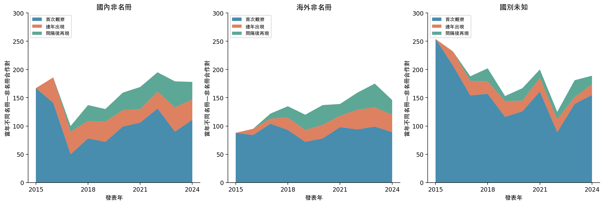
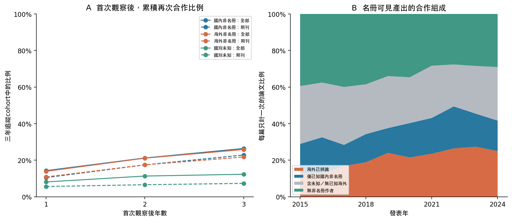
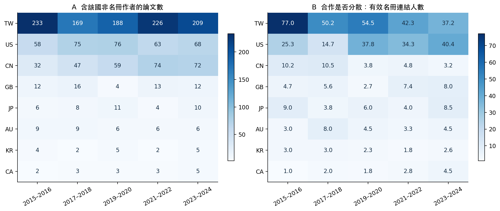

非名冊合作的時間結構與可見研究產出
第一輪描述性圖表：2015–2024。國別是彙整affiliation標籤，未建立逐年身份；研究能量暫以可見產出、關係重現和連結分散程度拆開描述。
可修訂研究計畫 · 第一輪判讀 · 數據與來源雜湊
合作成長是新夥伴、持續關係，還是重新連上？
同一年多篇合著只算一對。首次觀察不是真正首次合作；2015是左截斷邊界。間隔後再現不表示期間曾停止研究。三類國別使用現有彙整標籤，未知獨立保留。

關係留下來了嗎？它們支撐多少可見產出？
A只追蹤2017–2021首次觀察的合作對，至少有2年回溯、完整3年追蹤；期刊子集會改變cohort。曲線為描述值，未控制作者活躍度或身份辨識偏差。B四類互斥且加總100%，海外類可能同時有國內及未知作者；不是合作的因果產出貢獻。

合作量增加，是否也有更多人承接？
每兩年一窗。左圖同篇可含多國，因此不能跨國加總。右圖以名冊教師—外部作者—論文事件計算1/HHI；所有事件集中一位教師時等於1。這是連結分散程度，不是國家科研實力；大型團隊可能增加事件權重。TW表示國內非名冊合作。
